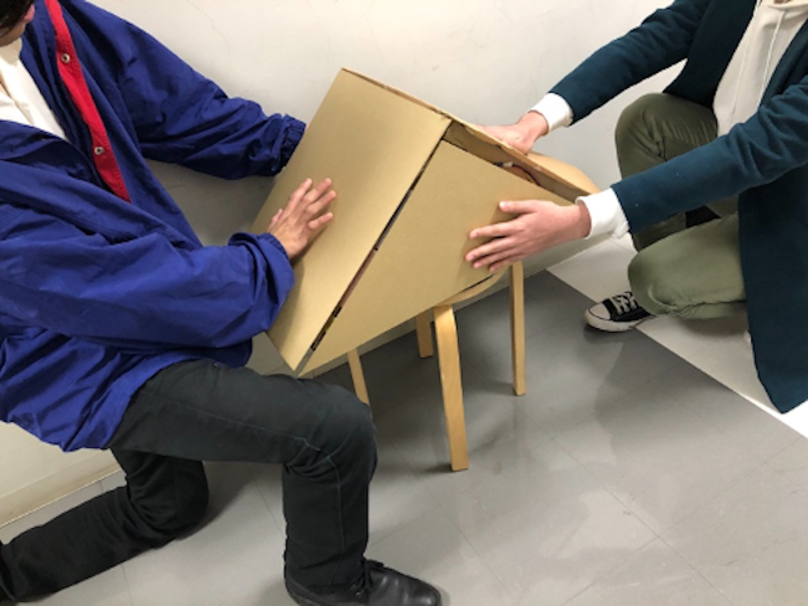

Sustttainer
~ジェスチャ認識とマルチタッチ機能による
さする演奏システムの提案~

Sustttainer:ジェスチャ認識とマルチタッチ機能によるさする演奏システムの提案
デジタル技術をベースにして音楽体験を拡張するシステムは様々に研究がなされ、新たなインタフェースの製作やジェスチャ認識などによって演奏体験も様々に拡張されてきた。本研究では「さする」という動作に着目し、 立体の中のいくつかの面をさすることで演奏を行う装置であるSustttainerを提案する。Sustttainerは加速度センサを用いたジェスチャ認識と静電容量センサを用いたマルチタッチ機能により、MDFとダンボールによって製作された三角柱の平面さするという動作によって、音量、音高、音色を制御できる。
MOVIE
Sustttainerの解説動画
CONFERENCE
インタラクション2020 インタラクティブ発表 (デモ)
2020.3.9 - 3.11
Online
CREDIT
Concept, Software Enginnering(Sensing): Shinsuke Tomizawa
Concept, Software Enginnering(Sensing): Masashi Kimura
Concept, Software Enginnering(Sensing): Akihiro Takaramoto
Concept, Software Enginnering(Game): Shunta Ito
Concept, Hardware Enginnering: Haruka Ito